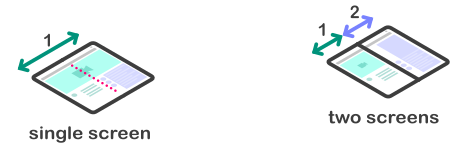

## Abstract
This explainer discusses new device [=form factors=] that are emerging and related terminology that is being established. This document proposes one naming scheme to be able to reason about and use these terms and concepts consistently in [related web specifications](#related-web-specifications). The use of these terms in other contexts may differ.
## Terminology and conceptual model
>Form factor is a hardware design aspect that defines and prescribes the size, shape, and other physical specifications of components, particularly in electronics. A form factor may represent a broad class of similarly sized components, or it may prescribe a specific standard. It may also define an entire system, as in a computer form factor. ([Wikipedia](https://en.wikipedia.org/wiki/Form_factor_(design)))

* Relationship of form factor-related terminology in this explainer.*
### Foldable device
A foldable device is a top-level concept that encompasses both a [=dual-screen device=] and a [=foldable-screen device=] [=form factors=].

* A concept of a [=foldable-screen device=] on the left and a concept of a [=dual-screen device=] on the right. ([Source](https://w3c.github.io/screen-fold/))*
A [=foldable device=] has a mechanism that allows the device to fold open and closed similarly to traditional laptops. To differentiate from the traditional laptop form factor, a foldable device has a screen on both sides of the fold. In the most typical configuration, a foldable device can fold a one bigger screen into two smaller screens. A foldable device can have one or more physical internal screens made of solid materials (e.g. glass) or foldable materials (e.g. organic compound). Screens made of solid materials employ a visible physical hinge between the screens that creates a physical gap between the screens, while the screens made of flexible materials employ a physical hinge underneath the screen and as such can bend without forming a physical gap between the logical regions divided by the fold. The physical hinges can rotate from ~0 degree to at most 360 degrees, but the range of movement may be limited depending on the device’s hardware characteristics. Screens made of flexible material can bend within certain limits and to differentiate from the designs with the screens made of solid materials, they do not have a physical gap between the logical regions divided by the fold. The number of logical regions the screen may fold into is not limited and the physical size of the device screen and its aspect ratio is not restricted. This translates into a wide spectrum of possible form factors and designs. Given this diversity, great care should be taken when exposing these capabilities to web developers to ensure a future-proof and extensible design.
* An illustration of two [=foldable-screen device=] concepts in two different [=postures=]. ([Source](https://w3c.github.io/screen-fold/))*
### Dual-screen device
A dual-screen device has two or more physical internal screens made of solid materials placed together to form a larger foldable virtual screen. A [=dual-screen device=] is an instance of a multi-screen device with two screens. A defining characteristic of the [=dual-screen device=] form factor is a physical hinge that can rotate from 0 degree to at most 360 degrees that forms a physical gap in between the screens. The range of the hinge movement as well as the width of the gap varies depending on the hardware design. The screens separated by the physical hinge are made of solid materials, typically glass, and as such are not flexible. This design requires web developers to work around the fact there is a physical gap between the screens on both sides of the fold.
### Foldable-screen device
A foldable-screen device has one or multiple screens made of foldable material that can bend so that the each screen can fold onto itself. The hinge can typically rotate from 0 degree to 180 degrees depending on the flexible screen materials’ capability of sustaining the bend radius. The material around the area of the screen that can bend is often softer than on the other parts of the screen. To differentiate from a dual-screen device, a foldable-screen device does not have a physical gap between the screens that form the logical regions. This makes it easier for existing web content to be presented without visual distractions when the foldable-screen device is folded open into so-called flat posture.
### Multi-monitor setups
A multi-monitor setup (sometimes referred to as an extended-screen device) is any device with one or more physical [=displays=] connected to expand the default visual workspace. This includes traditional desktop, [=traditional laptop=], and mobile devices, with additional [=displays=] connected beyond the single [=screen=] typical of these [=form factors=]. Additional displays are often [=monitors=], televisions, or projectors connected by a wire, but also includes other display form factors and connection technologies.
Major desktop operating systems allow users to customize the logical arrangement of multiple screens, including their relative arrangement and other attributes. The arrangement may or may not reflect the placement and dimensions of underlying physical hardware. In this configuration, it is typical to mix and match monitors of different physical sizes and resolutions, in both landscape and portrait configurations, to optimize the screen space for the usage model. This free-form composition of screens is distinct from the nature of [=dual-screen devices=], which have well-defined relationships between physical displays, and from [=foldable-screen devices=], which expands the operational modes of a single physical display.
Power users may also make use of advanced software tools to create virtual zones to which application windows can snap into (see e.g. Microsoft PowerToys FancyZones). The virtual zones provide a similar abstraction to the [=window segments=].
### Monitor
A monitor is an output device that displays information in pictorial form. A monitor usually comprises the display, circuitry, casing, and power supply. ([Wikipedia](https://en.wikipedia.org/wiki/Computer_monitor))
### Display
A display, informally a [=screen=], is a display device for presentation of images, text, or video transmitted electronically, without producing a permanent record. Electronic visual displays include television sets, computer monitors, and digital signage. ([Wikipedia](https://en.wikipedia.org/wiki/Electronic_visual_display))
### Screen
Screen is a synonym to [=display=]. [=Screen=] is used more in software context (logical) while display is primarily used in hardware context (physical). See also the [=Screen interface=].
### Multiple internal display
A multiple internal display (MID) device is a more technical synonym to a [=dual-screen device=].
### Single foldable display
A single foldable display (SFD) refers to a [=foldable-screen device=] with a single screen.
### Posture
A posture is defined as the primary way in which the [=foldable device=] is positioned and presented to the user. Because [=foldable devices=] have a hinge they can present different [=postures=] depending on the hinge angle, device orientation, and the way on how the device is being held by the user. Example postures include 'book', 'flat', 'laptop', and 'tent'. The list of postures is expected to evolve over time, and not all foldable devices are able to support all possible postures.
We've discussed the need to rethink the names of the postures to make them as abstract as possible. The fact that 'laptop' is both an actual device and a 'posture' mode can be confusing and misleading. Can a laptop have another posture that's not laptop? Does a mobile device get into laptop posture? Similar case with tablet as a device type and posture.
### Window segments
A window segment represents the regions (and their dimensions) of the window that reside on separate (adjacent) [=displays=].
### Spanning
Spanning is a window mode on a [=dual-screen device=], where a single application or web content window is spread across both [=screens=] of the device. The ability to maximize a given application across the two [=screens=] is enabled through the [=window manager=]. Because spanning across the two screens double the screen estate it is expected that applications and websites leverage that additional space to optimize or enhance the UX to provide a better experience.
A device can be a [=foldable device=] and have a [=multi-monitor setup=]. These [=form factors=] are not mutually exclusive and depend on the hardware present on the device and its use across software.
### Window interface
The [=Window interface=] represents a window containing a DOM document, with its document property pointing to the DOM document. The Window interface hosts a number of globally available functions and namespaces, objects, and constructors associated with the concept of a user interface window. In tabbed browsing, each tab is represented by its own Window object.
### Viewport
[Visual Viewport API](#visual-viewport-api) defines the two conceptual viewports, colloquially known as the [=visual viewport=] and [=layout viewport=]. This API may need changes to be compatible with the [related web specifications](#related-web-specifications).
### Fold
Fold is used as both a verb and a noun in the context of this explainer. _To fold_ means to lay one [part of the] screen over another [part of the] screen. _A fold_ (aka a screen fold) as a noun refers to the flexible [=screen area=] that bends.
### CSS pixel
A CSS pixel is denoted in CSS with the suffix px. It is a unit of length which roughly corresponds to the width or height of a single dot that can be comfortably seen by the human eye without strain ([MDN](https://developer.mozilla.org/en-US/docs/Glossary/CSS_pixel)).
One CSS pixel doesn’t necessarily correspond to one physical screen pixel, since that would make everything very small on high resolution screens. Instead one such CSS pixel might correspond to for example 2x2 square of physical pixels - or even non-discrete values given a subpixel (red, green, and blue) layout.
Many OS’s allow to change the scaling of all UI elements which often is reflected in the [device pixel ratio](https://drafts.csswg.org/cssom-view/#dom-window-devicepixelratio) that makes up one CSS pixel. A browser also often allows the user to apply a scale on top of the OS-provided scale on a per site basis. The layout is laid out considering the browser viewport in CSS pixels. For example, given a browser scale of 125%, a 800px wide viewport becomes a 640px wide viewport.
### Layout zoom
Layout zoom to be defined.
### Content scaling
Usually content is laid out given the size of the viewport in [=CSS pixels=], but that may not always be the case. Especially on mobile devices the user may select “Show desktop site” which will usually lay the content out mimicking common desktop browser window size (typically 980-1024px width), and then that content is scaled so that the width fits within the actual viewport.
Typically you can control this scaling via the viewport meta tag and browsers often also allow the user to manually change the content scale, by so-called pinch zoom gestures.
### Window manager
Window manager to be defined. In particular, articulate the constraints imposed by various window managers (Android, split-screen, desktop/tablet modes, Windows 10X etc.)
### Content area bounds
Content area bounds to be defined.
## What are we trying to solve?
For [=foldable devices=]:
- Let developers design around the hinge for [=dual-screen devices=] when in [=spanning=] mode
- React to [=posture=] changes to allow the possibility to re-layout accordingly
- Access the hinge size, type and angle
For [=multi-monitor setups=]:
- Ability to layout and display a window on any of the connected screens
- Ability to request fullscreen on any connected screen
- Ability to place non-fullscreen windows on any connected screen
## API overview
Web platform developers would like to enhance their sites and applications for new ‘foldable’ device form factors, as well as more traditional multi-screen desktop environments.
For [=foldable devices=]:
- [The ‘spanning’ CSS media feature and device fold CSS environment variables](#the-spanning-css-media-feature-and-device-fold-css-environment-variables)
- Provides the type and dimensions of a screen fold, when the document’s viewport spans a screen fold.
- [Window Segments Enumeration API](#window-segments-enumeration-api)
- Provides dimensions of content regions, yielding separate rectangles when the document’s viewport spans a screen fold.
- [Screen Fold API](#screen-fold-api)
- Provides the overall device posture and fold angle when the document’s viewport spans a screen fold.
For [=multi-monitor setups=]:
- [Multi-Screen Window Placement API](#multi-screen-window-placement-api)
- Provides information about all connected Screens
- Allows sites to request fullscreen or place windows on any connected Screen
## Goals
There are two main developer scenarios explored by these proposals:
1. Optimizing site layout when a document’s viewport spans a screen fold.
1. Managing the placement of document windows in a multi-screen environment.
One can imagine combined scenarios, such as:
1. Placing windows adjacent to or spanning a screen fold.
1. Determining in advance whether a window placement request will cause the window to span a screen fold.
## Non-goals
Certain operating systems and [=window managers=] do not support window bounds requests from applications, e.g. Android (non-freeform window modes), Windows 10 tablet mode, Chrome OS Tablet Mode, Windows 10X, etc. It’s an explicit non-goal to support window bounds changes in these circumstances.
[The ‘spanning’ CSS media feature and device fold CSS environment variables](#the-spanning-css-media-feature-and-device-fold-css-environment-variables) proposal is not currently meant to solve the problem for [=foldable devices=] with more than two [=screens=], due to the unavailability of a CSS construct that allows authors to iterate over a set of values. In this case, an author would need a function that allows them to retrieve the browser's predefined env() variables of the n-th fold/hinge.
## Open questions
- Support for [Multi-Screen Window Placement API](#multi-screen-window-placement-api) on [=dual-screen devices=] or [=foldable-screen devices=]? ([webscreens/window-placement#44](https://github.com/webscreens/window-placement/issues/44))
- Could a single [=Screen interface=] object yield multiple [=window segments=] in a window? ([webscreens/window-segments#7](https://github.com/webscreens/window-segments/issues/7))
- Support for single/multi-Screen [=folds=], off-center folds, and multiple folds in a single [=Screen=] ([w3c/screen-fold#38](https://github.com/w3c/screen-fold/issues/38))
- Figure out how Virtual Keyboard API should interact with layout adjustments for [=foldable devices=] ([Explainer](https://github.com/MicrosoftEdge/MSEdgeExplainers/blob/main/VirtualKeyboardPolicy/explainer.md), see also [design-reviews/issues/498](https://github.com/w3ctag/design-reviews/issues/498), [design-reviews/issues/507](https://github.com/w3ctag/design-reviews/issues/507))
## Related issues
- https://github.com/webscreens/window-segments/issues
- https://github.com/webscreens/window-placement/issues
- https://github.com/w3c/screen-fold/issues/
- https://github.com/w3c/csswg-drafts/issues/5621
## Related web specifications
The specifications enumerated in this section have been identified to be relevant in the context of new device form factors.
De-duplicate and standardize these terms across the related specs and syntaxes.
### Web APIs
#### Window Segments Enumeration API
- References:
[GitHub](https://github.com/webscreens/window-segments),
[Explainer](https://github.com/webscreens/window-segments/blob/master/EXPLAINER.md)
- Terms defined by this specification:
- window segment
- display
- screen
#### Multi-Screen Window Placement API
- References:
[GitHub](https://github.com/webscreens/window-placement),
[Explainer](https://github.com/webscreens/window-placement/blob/master/EXPLAINER.md),
[Draft Community Group Report](https://webscreens.github.io/window-placement/)
- Terms defined by this specification:
- [screen pixel](https://webscreens.github.io/window-placement/#screen-pixel)
- [color depth](https://webscreens.github.io/window-placement/#color-depth)
- [screen area](https://webscreens.github.io/window-placement/#screen-area)
- [connected screen](https://webscreens.github.io/window-placement/#connected-screens)
- [available screen area](https://webscreens.github.io/window-placement/#available-screen-area)
- system screen area
- [internal screen](https://webscreens.github.io/window-placement/#internal)
- [external screen](https://webscreens.github.io/window-placement/#external)
- [primary screen](https://webscreens.github.io/window-placement/#primary)
- [touch support](https://webscreens.github.io/window-placement/#touch-support)
#### Screen Fold API
- References:
[GitHub](https://github.com/w3c/screen-fold/),
[Explainer](https://github.com/SamsungInternet/Explainers/blob/master/Foldables/FoldState.md),
[Unofficial Draft](https://w3c.github.io/screen-fold/)
- Terms defined by this specification:
- [current screen fold angle](https://w3c.github.io/screen-fold/#dfn-current-screen-fold-angle)
- [current posture](https://w3c.github.io/screen-fold/#dfn-current-posture)
- posture
#### Visual Viewport API
- References:
[GitHub](https://github.com/WICG/visual-viewport/),
Explainer,
[Draft Community Group Report](https://wicg.github.io/visual-viewport/)
- Terms defined by this specification:
- layout viewport
- visual viewport
#### HTML
- References:
[GitHub](https://github.com/whatwg/html/),
Explainer,
[Living Standard](https://html.spec.whatwg.org/multipage/window-object.html#window)
- Terms defined by this specification:
- [Window interface](https://html.spec.whatwg.org/multipage/window-object.html#window)
### CSS
#### Media Queries
- References:
[GitHub](https://github.com/w3c/csswg-drafts/blob/master/mediaqueries-5/Overview.bs),
Explainer,
[Editor's Draft](https://drafts.csswg.org/mediaqueries-5/)
- Terms defined by this specification:
- [‘screen’ media type](https://drafts.csswg.org/mediaqueries-5/#valdef-media-screen)
#### CSS Environment Variables
- References:
[GitHub](https://github.com/w3c/csswg-drafts/blob/master/css-env-1/Overview.bs),
Explainer,
[Editor's Draft](https://drafts.csswg.org/css-env-1/)
- Terms defined by this specification:
- ['env()' function](https://drafts.csswg.org/css-env-1/#funcdef-env)
#### The 'spanning' CSS media feature and device fold CSS environment variables
- References:
GitHub,
[Explainer](https://github.com/MicrosoftEdge/MSEdgeExplainers/blob/main/Foldables/explainer.md),
Spec
- Terms defined by this specification:
- ‘spanning’ CSS media feature
- ‘screen-spanning’ feature policy
- fold-top | fold-right | fold-bottom | fold-left | fold-width | fold-height device fold CSS environment variables
#### CSS Device Adaptation
- References:
[GitHub](https://github.com/w3c/csswg-drafts/blob/master/css-device-adapt-1/Overview.bs),
Explainer,
[Editor's Draft](https://drafts.csswg.org/css-device-adapt-1/)
- Note: Abandoned(?), possibly reuse parts in other spec efforts mentioned in this explainer
- Terms defined by this specification:
#### CSSOM View Module
- References:
[GitHub](https://github.com/w3c/csswg-drafts/blob/master/cssom-view-1/Overview.bs),
Explainer,
[Editor's Draft](https://drafts.csswg.org/cssom-view/#the-screen-interface)
- Terms defined by this specification:
- [Screen interface](https://drafts.csswg.org/cssom-view/#the-screen-interface)
[Terms defined by this specification](#a-1-terms-defined-by-this-specification) are actually a composite of the terms defined by this specification and those defined by specifications enumerated in the [related web specifications](#related-web-specifications). This is a tooling limitation.
## Acknowledgements
The [Second Screen Community Group](https://www.w3.org/community/webscreens/) is grateful for contributions that have helped shape this document that attempts to build a shared understanding of this exciting space. Special thanks to
Zouhir Chahoud,
Kenneth Rohde Christiansen,
Victor Costan,
François Daoust,
Diego González,
Anssi Kostiainen,
Daniel Libby,
Alexis Menard,
Laura Morinigo,
Mike Wasserman,
and many others for their contributions!

 *
*